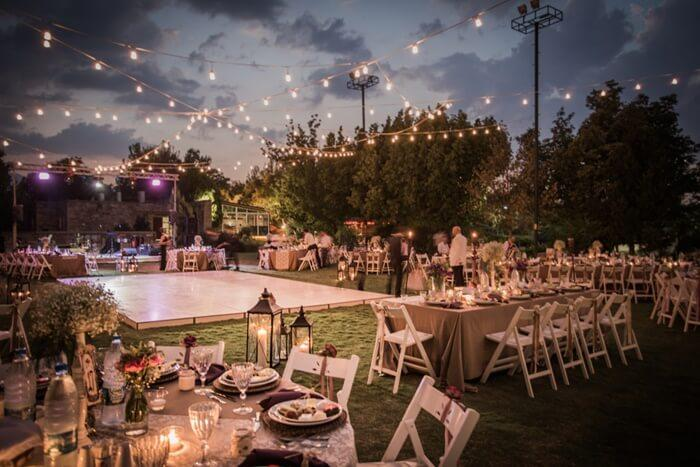
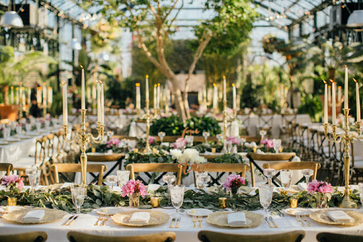

1 / 3

LUXURY WEDDING VENUES
2 / 3

WEDDING UNDER OPEN SKY
3 / 3

A GORGEOUS AND SIMPLE WEDDING
Please enjoy this gorgeous Laguna Cliffs Marriott Bangladeshi wedding featuring Anand and Anita. A big thank you to Iris Azha of Ethnic Essence Couture Events
Please enjoy this gorgeous Laguna Cliffs Marriott Bangladeshi wedding under open sky. A big thank you to Iris Azha of Ethnic Essence Couture Events
Whether you are dreaming of a romantic, vintage, classical, minimal, luxury or a theme wedding, the planner will fulfill your wish.
Did you know Tampa Bay offers for more than just beach weddings? The Tampa/St. Pete-Clearwater/Sarasota area offers hundreds of wedding venues from beachfront wedding venues to rustic, country reception sites. Browse our preferred wedding venue directory to find your dream location today!